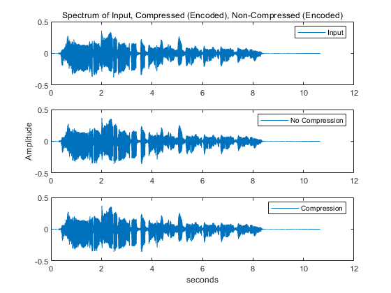

HW 5
HyungSeok Yoon hw5 MPEG -1 Layer 1 Music and Engineering ECE413 Professor Hoerning
Contents
Constants
clc; clear all; close all; % [input,fs] = audioread('guitar_C_major.wav'); [input,fs] = audioread('sax_riff.wav'); % % check signal % f= 2500; % fs = 44100; % t = 0:1/fs:1-1/fs; % input = sin(2*pi*f*t).'; [l,w] = size(input); frs = 384; %frame size C = C_table(); M = M_matrix(); scale_table = scale_table_const(); % Taking only the first channel if w>1 input_mono = input(:,1); else input_mono = input; end
Encoder
my first try on encoder based on just the standard reference failed because I tried to parse the whole input at the same time. I switched to the method that the code I found online used.
[TABLE,CB_map,AT] = F_CB_AT_table(fs);
CBB = critical_band_boundary(fs);
SMRsb_store=[];
filter_output_store = [];
scfmax_store = [];
scfindex_store = [];
count = 1;
% Process 1 frame at a time
X = zeros(512,1);
for delay = 1:frs:length(input_mono)-frs
filter_output = [];
% Poly-phase filter bank
for i = 1:12 % for each subband
[S_temp,X] = polyphasefilter(input_mono,X,delay+32*(i-1),C,M);
filter_output = [filter_output; S_temp]; %12 subbands by 32 samples
end
[scfmax,scfindex] = scale_factor_calculation(filter_output,scale_table);
scfmax_store = [scfmax_store,scfmax];
scfindex_store = [scfindex_store,scfindex];
%Perceptual Model
% I will use Model 1 (I will do model 2 later if i have time)
% reference ANNEX_D.doc
% fft analysis
fft_result = fft_analysis(input_mono,delay);
% sound pressure level
Lsb = sound_pressure_level(fft_result,scfmax);
% find tonal and non tonal
[flag tonal non_tonal] = find_tone(fft_result, TABLE, CB_map, CBB);
%Decimate
[flag tonal non_tonal] = Decimation(tonal, non_tonal, flag, TABLE, CB_map);
%individual masking threshold
[LTt, LTn] = imt(fft_result,tonal, non_tonal, TABLE, CB_map);
% global masking threshold
LTg = gmt(AT, LTt, LTn);
% Determine the minimum masking threshold in each subband [1, pp. 114]
LTmin = mmt(LTg, CB_map);
% Compute the singal-to-maks ratio
SMRsb = Lsb.' - LTmin;
filter_output_store(:,:, count) = filter_output;
count = count+1;
SMRsb_store = [SMRsb_store;SMRsb];
end
% Bit Allocation
cb = 32*8*12+32+32*6; % maximum allowable bits per frame -> data rate
% bbal :bits needed for bit allocation
% banc : ancillary data bit allocation
% cb : total number of bits available
min_MNR = 10; %dB scale, I set it to 10 so that I am safe
% for compression
[SNR] = SNR_table();
[A_B] = A_B_lookup_table();
for i = 1:length(SMRsb_store)
banc = 32+0;%header, no error correction
bbal = 128; % bit allocation
adb = cb - (bbal + banc);
it = 1;
temp = SMRsb_store(i,:).';
bits_insuband = zeros(32,1);
bspl = 0; %bits of samples
bspf = 0; % bits of scale factor
while(adb > 0)
if(bits_insuband(it) == 14)
break;
end
if(SNR(bits_insuband(it)+1,2)-temp(it)<min_MNR)
bits_insuband(it) = bits_insuband(it)+1;
if (bits_insuband(it) == 1)
bspf = bspf+6;
bspl = bspl+12; % first bit is actually 2 bits
bits_insuband(it) = bits_insuband(it) + 1;
end
bspl= bspl+12;
end
it = rem(it+1,33);
if it == 0
it = 1;
end
if(sum(SNR(bits_insuband+1,2)-temp>0)==32)
break;
end
adb = cb-bbal-bspf-bspl-banc;
end
actual = filter_output_store(:,:,i);
X_temp = actual./repmat((scfmax_store(:,i).'),12,1);
X_temp = X_temp.'; %32 by 12
A = A_B(bits_insuband+1,2);
A = repmat(A,1,12);
B= A_B(bits_insuband+1,3);
B = repmat(B,1,12);
q2 = A.*X_temp+B;
for kkk = 1:32
for kkkk = 1:12
quantized{kkk,kkkk} = mydec2bin(q2(kkk,kkkk),bits_insuband(kkk));
end
end
output{i}.samples = quantized;
output{i}.scf = scfindex_store(:,i); % I should convert to bits but i'm building my own decoder
output{i}.numbits = cb-adb;
% MNR_store = SNR - SMRsb_store;
end
% for no compression
% no compression uses all the 15 bits for information
% some reason
for i = 1:length(SMRsb_store)
banc = 32+0;%header, no error correction
bbal = 0;
bspl = 15*32*12; %bits of samples
bspf = 6*32; % bits of scale factor
temp = SMRsb_store(i,:).';
actual = filter_output_store(:,:,i);
X_temp = actual./repmat((scfmax_store(:,i).'),12,1);
X_temp = X_temp.'; %32 by 12
A = A_B(15,2);
A = repmat(A,1,12);
B= A_B(15,3);
B = repmat(B,1,12);
q2 = A.*X_temp+B;
for kkk = 1:32
for kkkk = 1:12
quantized{kkk,kkkk} = mydec2bin(q2(kkk,kkkk),15);
end
end
output_uncom{i}.samples = quantized;
output_uncom{i}.scf = scfindex_store(:,i);
output_uncom{i}.numbits = bbal+bspf+bspl+banc;
% MNR_store = SNR - SMRsb_store;
end
% frame_time = frs/fs;
% Data Formatting
outstream = output;
% outstream contains all the frames
outstream_uncompressed = output_uncom;
decoder
[a,b,c] = size(filter_output_store); N = N_matrix(); V = zeros(1024,1); D = D_table(); % %Testing Decoder % output_uncompressed=[]; % for i = 1:c % for ii = 1:a % temp_index = filter_output_store(ii,:,i); % % Scale = scale_table_lookup(temp_index); % Scale = temp_index.'; % [V,reconstruction] = unpolyphasefilter(V, Scale,D,N); % output_uncompressed = [output_uncompressed;reconstruction]; % end % end % % soundsc(output_uncompressed,fs); % % At least this works % % Actual Decoding % data rate computation data_rate=0; data_rate_uncom=0; for i = 1:length(outstream) data_rate = data_rate +outstream{i}.numbits; data_rate_uncom = data_rate_uncom +outstream_uncompressed{i}.numbits; end time_frame = frs/fs; % time elapsed per frame time_total = length(outstream)*time_frame; % data rate is in kbps data_rate = data_rate/time_total/1000; data_rate_uncom = data_rate_uncom/time_total/1000; % Compressed Output Decode output_compressed=[]; V = zeros(1024,1); %dequantize SS = zeros(32,12,length(outstream)); for i = 1:length(outstream) s_3 = zeros(32,12); s_2 = zeros(32,12); nb = zeros(32,12); temp = outstream{i}.samples; scf_temp = outstream{i}.scf; scf_temp = scale_table_lookup(scf_temp); for k = 1:32 for iii = 1:12 if(temp{k,iii}(1) == 'n') s_2(k,iii) = 0; else nb(k,iii) = length(temp{k,iii}); s_4 = temp{k,iii}(2:end); for j = 1:length(s_4) if (s_4(j)=='1') s_3(k,iii) = s_3(k,iii) + 2^(-j); end end if(temp{k,iii}(1) == '1') s_3(k,iii) = s_3(k,iii) -1; end if(nb(k,iii)~=0) s_2(k,iii) = (2.^nb(k,iii))./(2.^nb(k,iii)-1)*(s_3(k,iii)+2.^(-nb(k,iii)+1)); % standard was impossible to read so I looked at the % dist10 reference end end end end s_1 = s_2.*repmat(scf_temp,1,12); SS(:,:,i) = s_1; end for i = 1:c for ii = 1:a temp_index = SS(:,ii,i); [V,reconstruction] = unpolyphasefilter(V, temp_index,D,N); output_compressed = [output_compressed;reconstruction]; end end % NOT Compressed Output Decode (baseline) output_nocom=[]; V = zeros(1024,1); %dequantize SS = zeros(32,12,length(outstream)); for i = 1:length(outstream) s_3 = zeros(32,12); s_2 = zeros(32,12); nb = zeros(32,12); temp = outstream{i}.samples; scf_temp = outstream{i}.scf; scf_temp = scale_table_lookup(scf_temp); for k = 1:32 for iii = 1:12 if(temp{k,iii}(1) == 'n') s_2(k,iii) = 0; else nb(k,iii) = length(temp{k,iii}); s_4 = temp{k,iii}(2:end); for j = 1:length(s_4) if (s_4(j)=='1') s_3(k,iii) = s_3(k,iii) + 2^(-j); end end if(temp{k,iii}(1) == '1') s_3(k,iii) = s_3(k,iii) -1; end if(nb(k,iii)~=0) s_2(k,iii) = (2.^nb(k,iii))./(2.^nb(k,iii)-1)*(s_3(k,iii)+2.^(-nb(k,iii)+1)); % standard was impossible to read so I looked at the % dist10 reference end end end end s_1 = s_2.*repmat(scf_temp,1,12); SS(:,:,i) = s_1; end for i = 1:c for ii = 1:a temp_index = SS(:,ii,i); [V,reconstruction] = unpolyphasefilter(V, temp_index,D,N); output_nocom = [output_nocom;reconstruction]; end end
Results
disp('Playing Not Copmressed Sound (baseline)'); string_s = ['Data Rate is ', num2str(data_rate_uncom), 'kbps']; disp(string_s); soundsc(output_nocom,fs); % pause; disp('Playing Compressed Sound'); string_s = ['Data Rate is ', num2str(data_rate), 'kbps']; disp(string_s); soundsc(output_compressed,fs); % original sound % soundsc(input_mono,fs) % figure; subplot(3,1,1); plot(1/fs:1/fs:length(input_mono)*1/fs,input_mono); title('Spectrum of Input, Compressed (Encoded), Non-Compressed (Encoded)'); legend('Input') subplot(3,1,2); plot(1/fs:1/fs:length(output_nocom)*1/fs,output_nocom); ylabel('Amplitude') legend('No Compression') subplot(3,1,3); plot(1/fs:1/fs:length(output_compressed)*1/fs,output_compressed); xlabel('seconds') legend('Compression') % As expected there is no distinguishable difference % I only have 1 psychoacoustics model. which is model 1 in the standard. audiowrite('compression.wav',output_compressed,fs); audiowrite('nocompression.wav',output_nocom,fs);
Playing Not Copmressed Sound (baseline) Data Rate is 687.225kbps Playing Compressed Sound Data Rate is 164.3932kbps